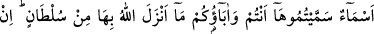
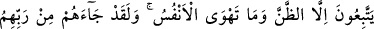
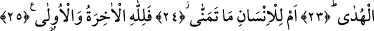

ÂHİRET DE DÜNYA DA
ALLAH’INDIR
19. Gördünüz mü o Lât ve Uzzâ’yı?
20. Ve üçüncüleri olan ötekini, Menât’ı.
21. Demek erkek size, dişi O’na öyle mi?
22. O zaman bu, insafsızca bir taksim!
23. Bunlar (putlar), sizin ve atalarınızın taktığı isimlerden başka bir şey değildir.
Allah onlar hakkında hiçbir delil indirmemiştir. Onlar ancak zanna ve nefislerinin
arzusuna uyuyorlar. Halbuki kendilerine Rableri tarafından yol gösterici gelmiştir.
24. Yoksa insan, her arzu ettiği şeye sâhip mi olacaktır?
25. Âhiret de dünya da Allah’ındır.
Bunlar müşriklere âid putlardı. Lât, Tâif’te bulunan Sakîf kabilesine âiddi. Müşrikler
bu putun etrafında toplanıp tavaf ederlerdi. Bu put insan şeklinde idi.
Uzzâ, Gatafan kabilesinin taptığı semure ağacı şeklindeki bir puttu. Rasûlullah (s.a.)
Hâlid b. Velîd (r.a.)’i ona göndermiş ve Hâlid (r.a.): “Ya Uzzâ nankörlük sana, senin
için tenzîh yok. Gördüm ki Allah seni zelil kıldı” diyerek başına vurdu. Onun içinden
saçları dağınık, ellerini başının üzerine koymuş şeytan kılıklı bir kadın çıkmış ve Hâlid
(r.a.)’e “ah vâh çekerek” velvele koparıyordu. Bunun üzerine Hâlid (r.a.) ölünceye
kadar o kadına da kılıçla darbe vurdu. Daha sonra da Rasûlullah (s.a.)’a gelip durumu
haber verdi. Peygamber de: “Artık bundan böyle Araplara Uzzâ yok” dedi.
Kâmus’ta Uzzâ’nın Gatafan kâbilesinin taptığı bir put veya Semure ağacı olduğu
bildirilmektedir. Bu putu ilk defa Zâlim b. Es’ad put edinmişti. Bu put Zât-ı Irk denen
mahallin üst kısmında, Bustan’a dokuz mil mesâfede idi. İbn Es’ad onun üzerine Bess
denilen bir ev yaptırmıştı ve onun içinden bir ses duyarlardı. Rasûlullah (s.a.) Hâlid b.
Velid (r.a.)’ı göndermiş, Hâlid o evi yıkmış, ağacı da yakmıştı...